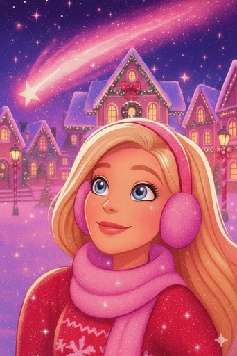
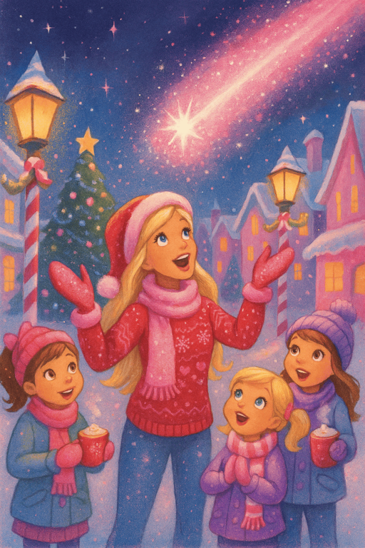
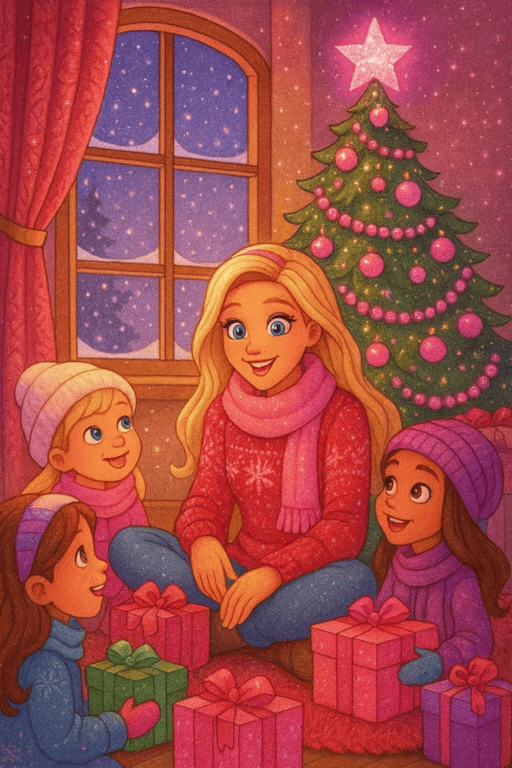
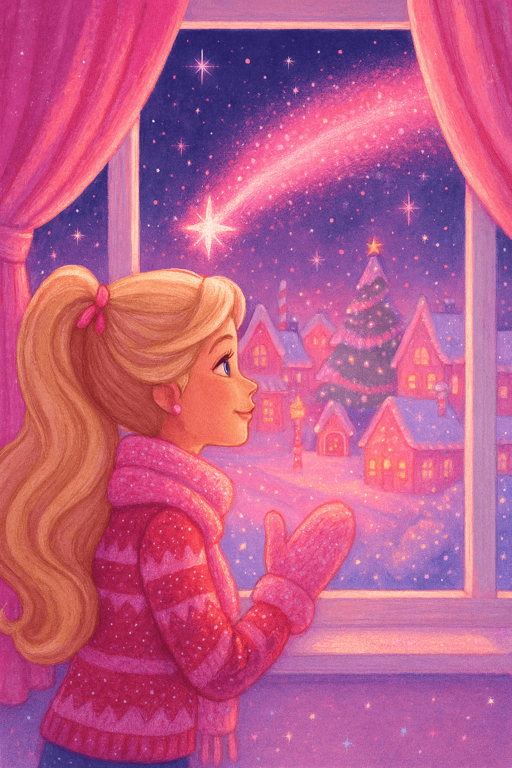

The Pink Comet's Promise
In Barbie’s bright and sparkly world, there was a famous legend. People said that on Christmas Eve, the Pink Comet crossed the sky. Its bright-pink light meant that a true and heartfelt wish was coming true. But only real believers could see it.
Barbie believed with all her heart. She always said, “Dreams are plans for magic! And the Pink Comet shows us that magic is real.” One day, she met a girl named Shimmery, who believed only in logic and facts. During a cookie party, Shimmery said, “Santa? It’s just tired parents and simple logistics.” Barbie gasped and almost dropped her gingerbread cookie.
“Shimmery! How can you not believe in Santa? What about joy? Mystery? And big bags of gifts?” Shimmery just shrugged. “I believe in proof.” Barbie promised herself that she would change Shimmery’s mind before Christmas Eve.
The Night of the Comet
On Christmas Eve, Barbie, Midge, Teresa, and Skipper gathered to celebrate. Shimmery sat quietly, drinking cocoa and pretending not to be excited. Barbie spoke gently: “Tonight, make a wish you think is impossible. Wish it with your heart. If you see the Comet, that is your sign.”
Shimmery rolled her eyes. “Impossible wishes? Fine.” But deep inside, she made two real wishes: to see the true Santa and to find her lost star-pendant necklace from childhood.
The girls walked through the town festival. They sang Christmas songs, ice-skated, and enjoyed hot chocolate. On the ice, Shimmery screamed, “My legs feel like noodles!” while holding onto Teresa. “Just believe you can fly!” Teresa laughed.

Later that night, while the girls were chatting happily, Shimmery suddenly froze. A huge, bright pink light ripped across the sky. It was the legendary Pink Comet. “Look! Look up!” she cried.
Barbie and the others gasped and hugged each other, screaming with joy. Shimmery stood still, tears filling her eyes as the beautiful light passed over her.

Then a loud voice echoed from above: “HO! HO! HO!” Santa’s glowing sleigh flew low above them. “Merry Christmas, Shimmery—and all you wonderful girls!” he called. Shimmery collapsed into Barbie’s arms. “He said my name! Santa is real!”
The True Power of the Heart
Back at the Dreamhouse, a shiny silver-wrapped present with a tag that said “Shimmery” stood out. Barbie picked it up and said, “Shimmery, I think someone left this for you.” Shimmery opened it and found her long-lost star-pendant necklace, her second impossible wish. Beside it was a small note that said: “The true power is in your heart, my dear Shimmery. The secret is simply to believe… Signed, Santa Claus.” That night, Shimmery finally became a true believer.
Later, Barbie looked out her window and smiled softly. “All I wish is that days full of joy and magic could happen again and again,” she whispered into the night.”
Suddenly, the sky lit up as the Pink Comet, brighter than ever, rushed past her window, showing that her wish had come true. Barbie closed her eyes, thankful for the most magical Christmas of her life, and fell asleep with her heart full of warmth and gratitude. Christmas night had been truly magical.
The End